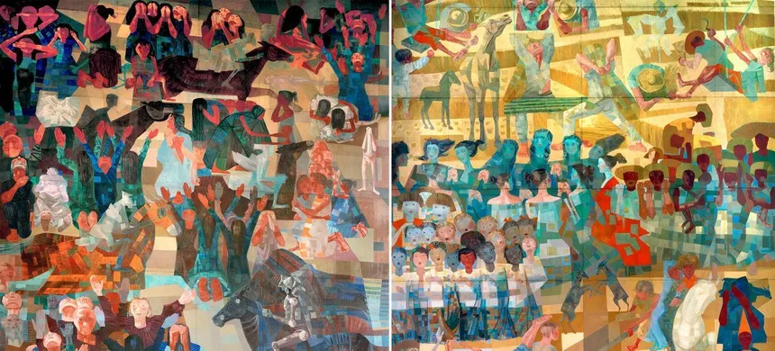

COLÔNIAL
A produção artística no Brasil Colônia teve início com a colonização portuguesa e estava fortemente ligada à religião. A arte servia como instrumento de catequese dos povos indígenas e de afirmação do poder da Igreja Católica.
Entre os séculos XVII e XVIII, o barroco se tornou o estilo dominante. Caracterizado por formas exuberantes e temas religiosos, ganhou força em regiões como Minas Gerais, com destaque para artistas como Aleijadinho e Mestre Ataíde.
Apesar da forte influência europeia, a arte colonial brasileira desenvolveu traços próprios. Artesãos locais incorporaram elementos regionais e culturais, criando um estilo único dentro do barroco religioso.

IMPERIALISTA
Durante o período imperial, a arte brasileira começou a se afastar da influência religiosa colonial e passou a servir à construção da identidade nacional. O Estado passou a patrocinar a arte, promovendo temas ligados à história, ao poder monárquico e à paisagem brasileira.
A Academia Imperial de Belas Artes, fundada no século XIX, teve papel central na formação de artistas e na difusão do academicismo. Esse estilo valorizava a técnica, o equilíbrio e temas clássicos, com destaque para artistas como Pedro Américo e Victor Meirelles.
No início da República, a arte ainda mantinha traços acadêmicos, mas novas ideias começaram a surgir. Aos poucos, surgiram movimentos que buscavam representar o povo, os problemas sociais e a realidade brasileira, preparando o caminho para o modernismo.

MODERNISTA
O modernismo no Brasil marcou uma ruptura com as tradições acadêmicas e buscou valorizar a identidade nacional de forma mais autêntica. Seu marco inicial foi a Semana de Arte Moderna de 1922, realizada em São Paulo.
Os modernistas defendiam uma arte livre, inovadora e ligada à cultura brasileira, incluindo elementos populares, indígenas e afro-brasileiros. Artistas como Tarsila do Amaral, Mário de Andrade e Oswald de Andrade foram grandes nomes do movimento.
Ao longo das décadas de 1920 a 1940, o modernismo se consolidou como linguagem artística dominante, influenciando a literatura, pintura, música e arquitetura. Foi um período de experimentação e renovação cultural profunda no país.